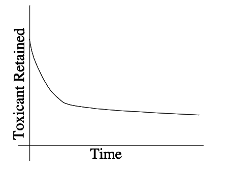
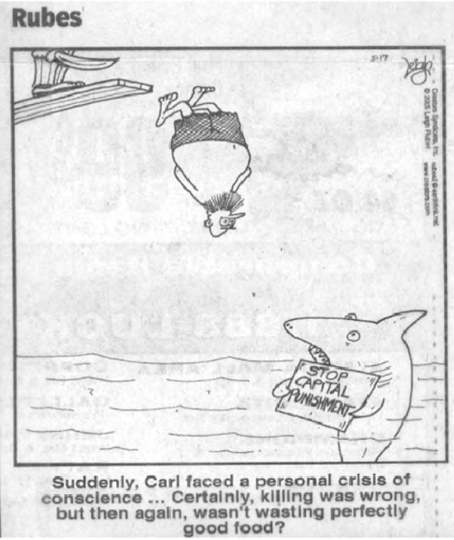

3. Regulatory Overview and Risk Assessment#
Course Website
%%html
<style> table {margin-left: 0 !important;} </style>
import sys
! hostname
! whoami
print(sys.executable)
print(sys.version)
print(sys.version_info)
ip-172-26-5-168
sensei
/opt/jupyterhub/bin/python3
3.10.12 (main, May 27 2025, 17:12:29) [GCC 11.4.0]
sys.version_info(major=3, minor=10, micro=12, releaselevel='final', serial=0)
Readings#
Videos#
Spreadsheets/Scripts/Data#
Scope#
U.S. and international groundwater contamination regulations
Risk-based corrective actions and exposure pathways
Case studies of regulatory decisions
Pollutants
Pollutants in groundwater refer to contaminating substances that have migrated into the underground water reservoirs, known as aquifers. These pollutants can include a wide range of chemicals, heavy metals, pesticides, fertilizers, industrial waste, and even naturally occurring substances like minerals and salts when they exceed desired levels. Contaminated groundwater poses a serious environmental and health risk, as it can affect drinking water quality and harm ecosystems when it reaches surface waters. Preventing and remedying groundwater pollution is crucial for safeguarding both human health and the environment.
Why we care Globally, the reliance on groundwater for human settlement sustainment is a critical aspect of our water supply infrastructure. Groundwater, which is stored in underground aquifers, serves as a lifeline for countless communities around the world. It plays a pivotal role in sustaining human settlements by providing a consistent and often more reliable source of freshwater.
Groundwater is utilized for various essential purposes, including drinking water supply, irrigation for agriculture, industrial processes, and even supporting ecosystems. Its importance becomes especially pronounced in regions where surface water sources such as rivers and lakes are scarce, unreliable, or subject to pollution and contamination.
The sustainability of groundwater resources, however, faces significant challenges. Over-extraction, driven by population growth and increasing water demands, can lead to the depletion of aquifers. This unsustainable use can result in land subsidence, seawater intrusion into coastal aquifers, and the long-term degradation of water quality.
Balancing the reliance on groundwater with sustainable management practices is crucial for the continued well-being of human settlements. Monitoring, conservation, and the implementation of responsible water management strategies are essential steps toward ensuring that groundwater remains a dependable resource for communities worldwide. This includes promoting water conservation, recharge of aquifers, and careful regulation of extraction to preserve this invaluable source of freshwater for generations to come.
Concentrations#
Solvent phase (soil, air, water) is the phase that contains the solute (constituient) phase. The amount of solute contained in the solvent is usually expressed as some kind of concentration either massic(mass/mass) or volumetric(mass/volume). Concentrations are expressed in a variety of units; The most common in environmental flow and transport models are volumetric.
There are cases where multiple phases are present (multi-phase transport) and multiple components in a solute mixture (multi-component). Emulsions are a special kind of two-(or more)phase system where the emulsion behaves as a single phase with respect to motion. Oil-in-water, water-in-oil, biosolids-in-water (technically a slurry), coal-in-water (a slurry) are examples of commonly encountered emulsions.
The terms constituients and pollutants are used more or less interchangeably; however a pollutant represents a value judgement - if the particular constituient is undesirable, for example methyl-ethyl death in water - then its a pollutant, otherwise its just a lowly constituient. The distinction is irrelevant unless lawyers, judges, and money are involved - then be careful; someone goes to jail, and someone loses their doublewide if you get your mords wixed!
Types#
Lots of types of pollutants, their classification below is somewhat arbitrary but useful in assessing impacts and remediation methods.
Pathogens Bacteria, protozoa, virus, prions that can cause disease and death. Usually associated with waste from human activities.
Oxygen Demanding Materials Usually organic chemicals associated with human activities. Often will degrade naturally of sufficient time and O2 are available.
Inorganic Materials Cations and anions that pose a threat to health or economic use of air, soil, or water. Metals that are problematic, but not toxic (see hazardous chemicals).
Hazardous Chemicals This category is further defined by listed versus characteristic versus hazardous materials. Listed means the material is on a list; characteristic means it could exhibit behavior from:
Ignitability-Materials that pose a fire hazard during routine handling (e.g.gasoline)
Corrosivity-Materials that require special containers because they corrode standard containers. (e.g. hydrogen fluoride
Reactivity-Materials that react spontaneously with air or water, are unstable to shock or heat, generate toxic gases, or explode during routine handling. (e.g. white phosphorous)
Toxicity-Materials that release toxicants in quantities that pose a threat to human or environmental health when improperly handled. (e.g. Organophosphate pesticides)
Many compounds exhibit multiple characteristics - but one is enough to earn a spot on the pollutant show.
Sources#
From our textbook:
By design. Septic tanks, injection wells, land application.
Storage systems (failure). Leaks from landfills, tanks.
Transmission system (failure). Pipelines, trucks, trains.
Non-point sources. Irrigation,urban runoff,mining drainage
Wells, excavations.
Natural. Salt waters.
From (www.springwellwater.com):
Natural Sources. Groundwater contamination won’t always be a result of human activity. Some substances found naturally in rocks and soils, such as arsenic, iron, chlorides, sulfates, fluoride, or radionuclides, can become dissolved in groundwater. Other naturally-occurring substances, such as decaying organic matter, can move in groundwater as particles. Some of these contaminants may accumulate in excess quantities, posing a health threat if consumed. Others may produce an unpleasant odor, taste, or color. Groundwater containing these materials needs to be treated before it is used for domestic uses.
Pesticide and Fertilizer Use. Agriculture is a huge source of groundwater pollution. The spreading of slurry, fertilizers, pesticides, fungicides, insecticides, herbicides, and animal waste on the land can result in pollutants, such as nitrates and bacteria, seeping into underground water sources. These pollutants can have severe adverse effects on plants, animals, and people who rely on these water sources. Some of them can even stay in the ground for many months to many years. Atrazine, a common weed killer, is linked to congenital disabilities, cancer, and low sperm counts in humans.
Waste from Sewers and Other Pipelines. Sewer pipes carrying wastes sometimes leak fluids into the surrounding soil and groundwater. Sewage consists of organic matter, heavy metals, inorganic salts, bacteria, viruses, and nitrogen. Similarly, improperly designed, located, constructed, or maintained septic systems could leak bacteria, viruses, household chemicals, and other contaminants into the groundwater, causing severe problems. Pipelines carrying industrial chemicals and oil brine have also been known to leak, especially when the materials transported through the pipes are corrosive.
Improper Disposal of Hazardous Waste. Many of us don’t realize that the way we dispose of waste can impact the quality of the same groundwater we rely on. When we improperly dispose of materials such as cooking and motor oils, lawn and garden chemicals, paints and paint thinners, medicines, disinfectants, etc., they usually end up in groundwater wells. Besides, many substances used in the industrial process should not be disposed of in drains at the workplace because they could contaminate a drinking water source. Pouring the wrong chemicals down the drain or neglecting to discard medication properly can harm your groundwater sources and, ultimately, your health and possibly that of the people living in your household.
Natural Gas Drilling. Hydraulic fracturing, or “fracking” is a process used to drill for natural gas. A mixture of chemicals is combined with water and forced deep into cracks in the ground, opening them to gain more access to the gas. EPA scientists are still investigating whether natural gas drilling is contaminating groundwater sources in some Western States. But many homeowners have abandoned their houses after methane seeped into the water, and at least one house exploded in 2003, killing three people inside.
Mining and Quarrying. Mining and quarrying can release pollutants previously trapped in rocks into surrounding underground water sources. Precipitation causes these soluble chemicals to leach into the groundwater below. These wastes often include acid, iron, sulfates, and aluminum. Furthermore, toxins such as lead and arsenic were used in 19th-century mining, and often persist in today’s abandoned mine shafts.
Saltwater Contamination. When aquifers near the coast are over-pumped, there’s a risk of creating a vacuum that can quickly be filled with salty seawater. Saltwater is undrinkable and useless for irrigation, decreasing the availability of the already scarce freshwater. Saltwater contamination is a major concern for many coastal communities that depend on wells for drinking water.
Landfills. Landfills are areas where our garbage is taken to be buried. They are supposed to have a protective bottom layer to prevent contaminants from leaching into groundwater. However, if there’s no layer or the layer is cracked, contaminants from the landfill (paint, acid, car batteries, household cleaners, etc.) can make their way down into groundwater. These contaminants can pose serious health risks to humans and animals. Most landfill permits require some kind of monitoring for example TCEQ Groundwater Detection Monitoring Report Format
Military Bases. Military sites are home to some of the most dangerous contaminants, including trichloroethylene (TCE) and per- and poly-fluoroalkyl substances (PFAS). Even today, some US military facilities are plagued by contamination. Worse, some contaminants found in and around those facilities have drifted into some groundwater supplies. TCE is believed to damage the nervous system, lungs, and liver and cause abnormal heartbeat, coma, or even death. It’s also believed to cause cancer in humans. PFAS may lead to problems like thyroid disease, damage to the liver and kidneys, elevated cholesterol, and effects on fertility and low birth weight. And similar to TCE, it is a possible cancer-causing agent.
Atmospheric Contamination. Ever heard the saying, “What goes up must come down?” Well, that principle also applies to pollutants released into the atmosphere. These contaminants eventually return to Earth in rain, snow, and other forms of precipitation. Surface water then leaches these pollutants into groundwater. Moreover, nitrates and sulfates emitted from power plants and factories can cause acid rain, which streams through the soil and acidifies groundwater supplies.
A nice EPA Fact Sheet discusses sources in some detail.
A typical priority list (circa 1990s) for the pollutants themselves is:
Inorganics
Organics
Hydrocarbons
Solvents
Chlorinated hydrocarbons
Metals
Emerging contaminants
which pretty much covers everything! The category overlaps are intentional.
Exposure Sources and Effects#
A subset of sources, probably more useful in the overall context of transport are exposure sources:
Biological cycles: Uptake and decay of animal and plant life, excretion of materials, etc.
Domestic waste: Discharges of raw and treated wastewater.
Industrial waste:Discharges of raw and treated wastewater, discharges of raw and treated off-gases.
Nonpoint source: Landfill leachate, stormwater runoff. As a rule of thumb, a nonpoint source is any source that you cannot “point” to. (Although humorous, this definition is quite practical)
Effects (of exposure) are classified as:
Acute effects imply some immediate damage; effect is noticed quickly
Chronic effects imply long term damage; it may be many years until effect is noticed.
Exposure and Risk#
Fundamental question is what are the risks associated with assimilation of a certain compound at a certain concentration over short (acute) and long (chronic) term?
Risk Assessment Tools#
Toxic response analysis, Exposure Concentration, Cost-benefit analysis, Revealed and expressed preference analysis
Exposure Concentration#
Source of compound, production rates, and release rates to environment.
Characteristics of compound relevant to its ability to travel and react in the natural environment.
Data to estimate the population at risk. Occupation. Medical surveillance.
Socioeconomic use habits. The source and compound characteristics can be incorporated into models.
The actual risk analysis is a second step.
Dose/Response Concepts#
For response to a contaminant the material must be toxic and the receptor must be exposed. A highly toxic material with no exposure is not much of a hazard. A mildly toxic material with high exposure could be very hazardous.
Environmental toxicology typically assumes that for dilute pollutants, toxicity is proportional to concentration and duration. The longer the contact time, the greater the probability of toxic effects. Amount of toxicant initially absorbed is gradually decreased by metabolic activity and excretion with other bodily wastes.
The figure below is a conceptual retention curve for some pollutant

Time integral of the retention curve is called the retention dose. The lifetime retention dose is called the dose commitment. A typical formula for estimating retention dose is:
where \(R\) is the retention dose, \(C\) is the exposure concentration, \(U\) is the uptake rate, and \(D\) is the exposure duration.
Note
Obviously units are not supplied, we are in the realm of toxicology - outside scope of this document, but some background is needed, hence the overly simplified discussion herein.
Threshold Concept#
In drug therapy there exist threshold doses where response to the drug changes. Typically two thresholds in drugs exist, a lower bound where no therapeutic effect is observed, and an upper threshold where damage (usually death) occurs.
Similarly toxicants are thought to also have thresholds. A practice used is that one-percent of the threshold dose for animals is acceptable for humans (normalized by body weight).
Latency Concept#
In support of the threshold hypothesis it has been observed that the period between exposure and response (tumors) for carcinogen increases as dose decreases. Generally it is accepted that the product of dose and latent time raised to some power is a constant.
Estimating Fate of Pollutants#
The fundamental tool used to predict concentrations in the environment is the mathematical model, supported by data, laboratory experiments, and judgement.
Models are used in many disciplines such as:
Economics: predict market activity, occurrence or recessions or periods of productivity.
Meteorology: short-term weather conditions, long-term climatological conditions.
Engineering: predict performance of engineered systems. Predict transport and fate of pollutants.
Keeping this in mind, much of these notes is aimed at building useful models to support engineering decisions regarding groundwater quality.
A primary end goal is to estimate a Dilution–Attenuation Factor (DAF) and use that to inform remediation (or do nothing) decisions. A DAF alone is insufficient, so we tend to favor detailed model estimates if screening indicates that an active remediation activity is needed.
Dilution–Attenuation Factor (DAF): what it is and why it matters#
Dilution–attenuation factor (DAF) is a screening-level construct that links a source concentration to a downgradient receptor concentration by accounting for processes that reduce concentrations during subsurface transport. In its simplest form,
or equivalently \( DAF=\frac{C_{source}}{ C_{receptor}}\)
Conceptually, as a pollutant migrates from the source through the vadose zone and aquifer, sorption and degradation attenuate concentrations, and mixing with cleaner groundwater further dilutes them before they reach a receptor. EPA’s Soil Screening Guidance (SSG) frames this reduction explicitly and uses DAF to translate source terms to groundwater impacts.
Role in fate and transport and risk assessment#
In regulatory screening, DAF is the bridge between source concentrations (e.g., soil porewater, leachate) and point-of-exposure concentrations at a well. It is used to derive soil screening levels protective of groundwater or to back-calculate allowable leachate concentrations at a landfill boundary. Historically, EPA generated DAFs by applying the EPACMTP/EPACML family of groundwater transport models over ensembles of hydrogeologic settings; the resulting factors embody mixing, dispersion, and (depending on configuration) simplified attenuation behaviors.
The SSG also provides a site-specific path: calculate a dilution factor from aquifer properties—hydraulic conductivity, gradient, aquifer thickness—and source/well geometry, then pair it with attenuation considerations. For generic screening where site data are sparse, EPA commonly references a default DAF of 20 to represent dilution/attenuation in the saturated zone between a source and a receptor well. Several state and federal materials cite typical DAFs on the order of 10–20 for screening; programs may be more or less conservative by policy. Always verify your applicable guidance.
A recent technical critique reminds us that DAF is, in principle, the product of dilution (DF) and attenuation (AF)— \(DAF = DF \times AF\). Many screening implementations emphasize groundwater dilution and treat attenuation processes implicitly or conservatively. For chemicals with strong sorption, transformation, or multiphase behavior, this distinction can materially affect protectiveness and uncertainty.
Practical use in remediation design#
DAF is valuable early in design for order-of-magnitude estimates:
Screening cleanup goals: Given a drinking-water criterion at the well (e.g., MCL), a defensible DAF helps estimate a source-term performance target (soil or leachate concentrations) to meet that criterion at the point of exposure. Soil Screening Guidance: User’s Guide (EPA/540/R-96/018) link is to landing page only
Sensitivity checks: Varying K, gradient, aquifer thickness, well spacing, and source area reveals how fragile (or robust) protectiveness is to hydrogeologic uncertainty.
But DAF is not a remedy and is not a substitute for site-specific mass flux, heterogeneity, or preferential pathway analysis. When moving beyond screening to final design, couple DAF-style reasoning with site models (transient transport, sorption/retardation that varies with chemistry, degradation kinetics, and source depletion). Where regulations permit, calibrate against monitoring data and update DAF-like ratios with observed plume behavior.
Common pitfalls and good practice#
Using generic DAFs outside their domain. A default DAF (e.g., 20) is intended for screening and specific receptor/source configurations; it may not be conservative for thin aquifers, short well setbacks, or fractured media.
Confusing mixing length scales. DAF depends strongly on the control volume (screen length, well radius, capture zone). Document geometry and justify choices.
Ignoring chemical-specific attenuation. For redox-sensitive, degradable, or strongly sorbing compounds, the AF term can dominate. A dilution-only DAF can over- or under-predict risks.
Regulatory mismatch. Programs differ: some RSL/SSG workflows hold DAF fixed for generic tables, others require DAF=1 (no dilution) for conservative screening, and still others allow site-specific EPACMTP-based DAFs. Cite the applicable guidance in your submittal.
DAF is a policy-informed engineering shortcut: it compresses complex fate-and-transport into a single factor that enables transparent screening and communication across stakeholders. Use it to scope problems, to prioritize remedies, and to set provisional targets—then test those targets with site-specific modeling and monitoring. When you report a DAF, state the assumptions (hydrogeology, geometry, chemical properties), show the sensitivity, and anchor it to the applicable guidance. That’s how you keep screening-level tools rigorous enough for graduate-level practice and defensible in regulatory review.
Response#
Health effects
Economic effects
Legal effects
References#
Risk Assessment#
Risk = (Likliehood of outcome) \(\times\) (Consequence)
If we observe or predict a concentration at a point in an aquifer how bad is it? Do we have to clean it up to zero?
Usually cannot afford to! So we assess risk to establish a technologically achievable target.
The concept of a technology-based target is incorporated into the Clean Air Act and under the Clean Wasser Act, under Sections 301, 302, 304, and 306, the EPA issues technology-based effluent guidelines that establish discharge standards based on treatment technologies that are available and economically achievable. Each EPA Region issues permits that meet or exceed the guidelines and standards.
A similar concept applies in groundwater contaminantion and restoration. All these concept rely on risk as the arbiter of target values.
Note
Here is an interesting review of risks of technology-based standards; its written from a litigation lawyer point of view - but nonetheless interesting! A similar law article is The Triumph of Technology-Based Standards

Hazard ID#
Sample collection & analytical data
presence/absence; locations
non-detects: how are these included in statistics?
< DL, or <PQL, or 1/2 DL, or zero?
A whole science of censored data is needed to be considered.
Exposure Assessment#
Pathways: inhale, ingest, absorb (through skin)
Medium: Air, water, soil
Receptor: Worker, resident, adult (70kg), child (16kg), infant (3kg)
Exposure:
\(EXP\frac{mg}{kg \cdot d} = IF(\frac{amount of medium}{d})\times C(\frac{mg}{medium}) \times EDF \times CF\)
IF == intake factor; EDF == exposure duration factor; CF == conversion factor
concentrations are compared to MCLs if available
derived from animal or human exposure
Asante-Duah, K. (1993) Hazardous Waste Risk Assessment

General AT guidelines:
Carcinogen: AT == Lifetime (70 \(\times\) 365 days)
Non-Carcinogen: AT == Approximate exposure time
Long-term:
CDI == chronic daily intake over 70 years
C == reasonably maximum exposure (time)
Short-term:
SDI == subchronic daily intake
LADD == lifetime average daily dose (cancer)
ADD == average daily dose (non-cancer)
MDD = maximum daily dose (short-term acute)
Toxicity Assessment#
Type of adverse effects. Relates exposure magnitude to amount of effect.
An example:
Total body exposure of 100 roentgens/rad or 1 Gray unit (Gy) causes radiation sickness. Total body exposure of 400 roentgens/rad (or 4 Gy) causes radiation sickness and death in half of the individuals who are exposed.
Note
There is a missing component above - 4 Gy kills 1/2 exposed in some prescribed time interval (I recall its 30 days). This whole concept of LD50 implicitly includes some response time window.
Radiation health effects are phenomenally well studied and much toxicity understanding is directly sourced from radition behavoir.
Data Sources
US EPA IRIS Has browsable database for example part of Agent Orange
Scientific literature
Health literature VA Agent Orange
Conspiracy literature (probably less reliable) YouTube Agent Orange
All based to some extent on:
Case clusters
Short-term laboratory studies
Unethical human experiments  Although wrong, should we use the data?